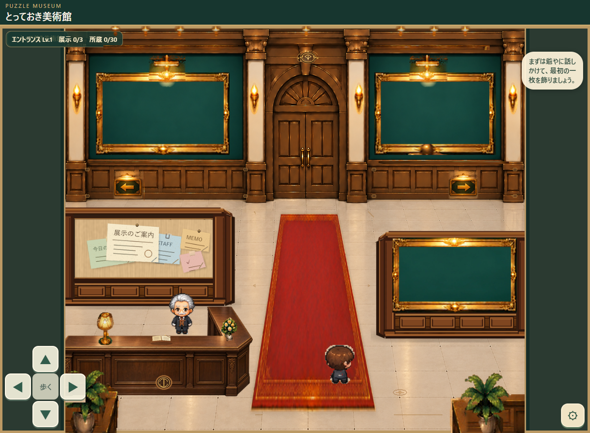

上のボタンで切り替えてください。iPhoneでも「拡大する」で細部を確認できます。
K案｜カーペットの奥行きを強化既存素材を遠近変形した構成案

拡大後は指でスクロールできます。
G案の元絨毯は残したまま、別案として中央の赤い絨毯を手前まで延長。既存の絨毯・金縁・接地影を遠近に合わせて再構成した静止案です。家具を増やさず、館の奥から入口まで空間をつないで見せます。サイズ・織り目は今後の品質調整が必要です。
通路の配置方針：エントランスから展示室1・2へ進む左右通路は、それぞれの仕切り壁の裏側に配置します。中央奥の扉は展示室5。上の「通路位置を見る」は設計位置を可視化するだけで、現在の移動判定を修正したものではありません。
新しい比較：G案は元のまま保存。H＝建築の縁取り・床と光の質感、I＝H＋旧ベンチ（右手前）、J＝H＋仮の展示写真3点、K＝Hを基にした長い中央絨毯です。Jの写真は以前のテスト素材であり、登録済みの実作品やゲーム内の写真寸法の再現ではありません。Kの絨毯は既存素材を変形した別の配置案で、G案の原本を置き換えてはいません。作品未登録でも成立するLv.6を検討するため、H/IとJを比較します。
採用方針と未決事項：ユーザー確認によりカーペット・柱照明・左右植物・木製台座の4種類はLv.6へ採用する方向で確定。具体的なサイズ・位置・微調整は未確定です。D・E案で追加した矢印案内板、額縁、展示灯、天井灯はまだ比較候補です。右の額縁は正式ゲームでは写真の縦横比に連動するため、現在の固定枠は見た目だけの仮配置です。F/Gの受付ランプ・花器・天井飾りは旧独立素材を使い、扉上の館章・受付帳・小さな金具は新規の試作です。ゲーム本体・当たり判定・保存・Lv.1正本は変更していません。 使わない素材は他室用として保留し、削除しません。